1. 時間計算量から考える問題の難しさ
前回は与えられた問題が「計算できるかできないか」について議論しました。今回は、ある問題が計算可能であっても、それはどのくらい難しいのかという点に着目します。前々回の授業では整列問題という１つの問題を題材にアルゴリズムを考えました。今回は、いくつかの問題を題材にして、コンピューター科学で問題の難しさについてどのように考えるのかを見てゆきます。
|
「問題の難しさ」とは何でしょうか？ 日常生活でも「この問題は難しい」「あの問題は簡単」と言いますが、コンピューター科学では「問題の難しさ」を数学的に厳密に定義します。具体的には、入力サイズが大きくなったときに計算時間がどのように増加するかによって難しさを測ります。これは「最悪時間計算量」という概念で表現されます。 |
1.1. 「全線巡り」と「全都市巡り」問題
以下の図をみてください。次のような点と線から構成される構造を、数学ではグラフといい、様々な構造を抽象化した表現に用いられます。点を頂点(node, vertex)、頂点と頂点の間の線を辺(edge)といいます。
ここでは頂点を駅、辺を路線と考えてみましょう。
|
グラフとは？ 「グラフ」という言葉を聞くと、多くの人は棒グラフや折れ線グラフを思い浮かべるかもしれません。しかし、ここでの「グラフ」は数学的な概念で、点（頂点）と線（辺）の集合です。ネットワーク構造を表現するのに非常に便利な道具で、交通網、人間関係、インターネットの構造など、さまざまなものを表現できます。 |
「同じ駅は2度通らずに（つまり各駅をただ1度だけ通って）、すべての駅を巡る経路を見つける問題」を考えてみます。このような経路は複数考えられます。
「各頂点をただ1度だけ通って、すべての頂点をめぐる経路」のことを、この問題について研究した数学者の名前からハミルトン路といいます。
|
ハミルトンとは？ ウィリアム・ローワン・ハミルトン（1805-1865）はアイルランドの数学者・物理学者です。四元数の発見者としても知られ、物理学の「ハミルトニアン」にもその名が残っています。グラフ理論におけるハミルトン路の名は、彼が考案した「イコシアンゲーム」に由来します。これは正十二面体の辺をたどって、20個の頂点すべてを1度ずつ巡るパズルです。 |
以下にハミルトン路の1つの例を赤線で示しています。
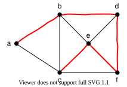
また、旅だとすると出発地点に戻りたいので、出発駅を除いて同じ駅は2度通らずに、すべての駅を巡って出発点に戻る経路を見つける問題もあります。
経路が輪っかのようにつながっているとき、閉路といいます。 「出発点と終点が同じであることを除いて、同じ頂点は2度通らずに、すべての頂点を巡る閉路」のことを、ハミルトン閉路といいます。ハミルトン閉路から辺を1本取り除くと、ハミルトン路が得られます。つまり、ハミルトン閉路を持つグラフは必ずハミルトン路も持ちます（逆は成り立ちません）。
ハミルトン閉路の例を以下に示しました。
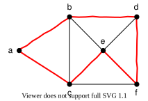
さて、鉄道マニアの中にはすべての駅ではなくて、すべての路線を制覇したいという場合もあると思います。この場合は、「同じ路線は1度だけしか通らずに、すべての路線を巡る経路を見つける問題」を解くことになります。駅は何度通過しても構いません。
「同じ辺は1度だけしか通らずに、すべての辺を巡る経路」のことを、この問題を解決した数学者の名前からオイラー路といいます。この問題は、一筆書きとして広く知られている問題と同じです。また、先程と同様に、出発点と終点が同じオイラー路をオイラー閉路といいます。
|
オイラーとは？ レオンハルト・オイラー（1707-1783）はスイス生まれの数学者で、数学史上最も多産な数学者の一人とされています。グラフ理論の父とも呼ばれ、ケーニヒスベルクの橋の問題（7つの橋をすべて1度ずつ渡ることはできるか？）に取り組み、1736年にそれが不可能であることを証明しました。この研究がオイラー路の概念とグラフ理論の出発点であり、一筆書き問題の原型でもあります。 |
以下にオイラー路の例を示しています。ハミルトン路のように単純に経路を示すことが難しいので、辺に番号と矢印をつけて経路を巡る順番を示しています。辺の番号の順番にたどると一筆書きできることがわかると思います。
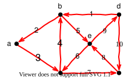
ここで、練習問題です。以下の3つのグラフについて、ハミルトン路とオイラー路を見つける問題を、それぞれ解いてみてください。
【グラフ1】
【グラフ2】
【グラフ3】
以下のようになれば、ハミルトン路とオイラー路の問題は理解できていると思います。
| グラフ | ハミルトン路 | オイラー路 |
|---|---|---|
1 |
あり |
なし |
2 |
なし |
あり |
3 |
なし |
なし |
1.2. どちらが難しい？
グラフが与えられたとき、
-
ハミルトン路を見つける問題
-
オイラー路を見つける問題
最悪時間計算量の観点からは、どちらが計算量の大きい問題でしょう。少し立ち止まって考えてみてください。入力のサイズとして、頂点の数や辺の数を用います。先程の例のような小さな規模の問題では、ハミルトン路もオイラー路も見つける手間はほとんど変わらなかったかもしれません。
|
直感は時として間違う 小さな例では同じように見える2つの問題が、実際には計算量の観点で大きく異なることがあります。これがコンピューター科学の面白さであり、また難しさでもあります。人間の直感だけでは判断できない問題の本質的な違いを、数学的な分析によって明らかにしていくのです。 |
オイラー路問題
オイラー路、つまり一筆書きの存在確認の方法は知っている人が多いかもしれません。以下の例をもう一度考えてみましょう。
【グラフ2】
まず、頂点に接している辺の数を数えます。この数のことを頂点の次数といいます。
グラフ2の例では、頂点 \(a\) の次数は1、頂点 \(b\) の次数は4です。
|
次数とは？ 次数（degree）とは、ある頂点に接続している辺の数のことです。人間関係のネットワークで考えると、「友達の数」のようなものです。この概念は、グラフの性質を理解する上で非常に重要です。 |
以下では、辺をもつ頂点どうしがすべて行き来できる（連結である）ことを前提とします。ばらばらに分かれたグラフでは、そもそも1本の経路ですべての辺をたどることはできません。
-
すべての頂点の次数が偶数のとき、オイラー閉路が存在します。
-
次数が奇数の頂点が2つだけ存在するとき（他にも頂点があれば、その次数はすべて偶数であるとき）、オイラー路が存在して、出発点と終点は、奇数の次数をもつ頂点になります。
-
上記の2つの場合に当てはまらない場合は、オイラー路は存在しません(つまり、オイラー閉路も存在しません)。
なぜ、このことが成り立つか考えてみてください（ここでは証明は示しませんが、とてもシンプルです）。
|
なぜこの判定法が成り立つのか？ 直感的に考えてみましょう。一筆書きでは、各頂点で「入ってくる」辺と「出ていく」辺が対になっている必要があります。途中の頂点では、入る回数と出る回数が同じなので、接続する辺の数（次数）は偶数でなければなりません。例外は始点と終点だけで、これらでは辺が1本ずつ「余る」ので次数が奇数になります。 |
一筆書きを見つける場合には、次数が奇数の頂点が2つだけ存在するときには、その一方を出発点とします。すべて次数が偶数のときには、どこから出発してもかまいません。
グラフ2の例では、次数が奇数の頂点は \(a\) と \(f\) で、次数はそれぞれ1です。\(a\) から出発してみます。その後は、仕方ない場合を除いて、できるだけ多くの頂点に辺を経由して到達できるように保ちながら、通った辺を削除していきます。
-
\(a\rightarrow b\) を通って、辺を削除します。すると、頂点 \(a\) は孤立してしまいますが、この場合はこれしか選択肢がないので、仕方ありません。
現在の経路: \(a \rightarrow b\) -
次に通過できる辺は \(b\rightarrow c\), \(b\rightarrow d\), \(b\rightarrow e\) の3つがあります。どの辺を選んで削除しても、\(a\) 以外にあらたに到達できない頂点を増やすことはないので、適当に選んでかまいません。ここでは、\(b\rightarrow d\) を選んで消してみます。
現在の経路: \(a \rightarrow b \rightarrow d\) -
\(d\) から出ている辺は \(d\rightarrow c\), \(d\rightarrow e\), \(d\rightarrow f\) の3つです。ただし \(d\rightarrow f\) を通ると、行き止まりの \(f\) に閉じ込められ、残りの辺を通れなくなるので、まだ選択しません。残る \(d\rightarrow c\) か \(d\rightarrow e\) のうち、ここでは \(d\rightarrow c\) を選びます。
現在の経路: \(a \rightarrow b \rightarrow d \rightarrow c\) -
\(c\rightarrow b\) しか選択肢がありませんので、この辺を通過して削除します。
現在の経路: \(a \rightarrow b \rightarrow d \rightarrow c \rightarrow b\) -
同様に辺を選択してゆくと結果的に \(a \rightarrow b \rightarrow d \rightarrow c \rightarrow b \rightarrow e \rightarrow d \rightarrow f\) となり、オイラー路が得られます。
これはFleuryのアルゴリズムとして知られている方法です。最悪時間計算量は辺の数を \(m\)とすると \(\text O(m^2)\) となります（もう少し速いアルゴリズムは知られていますがやや複雑なので割愛します）。現在のところ1873年に提案されたHierholzerアルゴリズムが、オイラー路を求める最良の上界をもつアルゴリズムで、その計算量は\(\text O(m)\) です。Fleuryのアルゴリズムは後に発表されましたが、効率で劣るこちらを紹介したのは、考え方がシンプルだからです（計算量がかかるのは、通過して辺を削除する際に「極力どの頂点にも到達できるようにしたまま通過・削除する」という条件を判定する部分です）。
|
線形時間 \(\text O(m)\) の意味 \(\text O(m)\) は「辺の数に比例する時間」という意味です。これは非常に効率的で、グラフが大きくなっても辺の数が2倍になれば計算時間も約2倍になるだけです。このような「線形時間」のアルゴリズムは実用上とても重要です。 |
ハミルトン路問題
ハミルトン路を見つける問題は、オイラー路を見つける問題よりもはるかに大きな上界しか知られていません。ハミルトン路は、すべての頂点を通る経路を見つける問題でした。すぐに思いつく方法は、次のような方法でしょう。
-
すべての頂点の順列を列挙する
グラフ2の例では、\(abcdef, abcdfe, abcedf, abcefd, \dots\) と6つの頂点のすべての順列を列挙する -
列挙された頂点の並びを順に1つ1つチェックし、頂点の並びを結ぶ辺が実際に存在するかどうかを判定する
-
存在すれば、それがハミルトン路となる
-
存在しなければ、次の順列をチェックする
-
|
順列の爆発的増加 \(n\) 個の頂点の順列の数は \(n!\)（\(n\) の階乗）個あります。これがどれほど大きな数か実感してみましょう。
20個でも約240京通りという天文学的な数になります！ |
グラフ2の例では、まず \(abcdef\) をチェックすると、\(a\rightarrow b \rightarrow c \rightarrow d \rightarrow e\) までは辺が存在するが、\(e\rightarrow f\) が存在しないので、次の順列 \(abcdfe\) をチェックします。これをハミルトン路が見つかるまで、すべての順列について繰返します。
すべての順列をチェックしても、順列の各頂点を結ぶ辺が見つからなければ、ハミルトン路は存在しないことになります。この方法はとてもシンプルで直感的にもわかりやすい方法です。しかし、時間計算量は、各順列について隣接関係をすべて確認する単純な実装では、頂点数を \(n\) とすると \(\text O(n\cdot n!)\) となってしまいます。1962年に動的計画法というアルゴリズムの手法を用いたBellman–Held–Karpアルゴリズムが考案され、上界は \(\text O(n^2 2^n)\) にまで改善されました。
|
動的計画法による改善 Bellman–Held–Karpアルゴリズムは「動的計画法」という手法を使います。これは「同じ部分問題を何度も解く無駄を省く」アイデアです。\(\text O(n^2 2^n)\) は \(\text O(n!)\) よりは小さいですが、それでも指数時間であることに変わりはありません。\(2^n\) も \(n!\) も、\(n\) が大きくなると実用的でない時間がかかります。 |
頂点間に距離（重み）を与えて、すべての頂点をちょうど1度ずつ巡って出発点に戻る経路のうち最短のものを求める問題、いわばハミルトン閉路問題の重み付き版に相当する問題を考えると、日常的にも役に立ちそうな問題設定であることがわかると思います。この問題は、巡回セールスマン問題（Traveling Salesman Problem: TSP）として知られています。
|
巡回セールスマン問題の実用性 TSP（巡回セールスマン問題）は理論的な問題に見えますが、実は非常に実用的です。
多くの現実問題がTSPとして定式化できるため、たとえ完全に解けなくても近似解を求める研究が盛んに行われています。 |
1.3. ゲノムアセンブリとオイラー路問題
生物の遺伝情報であるゲノム配列を解読する作業は、問題の定式化のしかたによって、ハミルトン路問題にもオイラー路問題にもなります。短い断片を大量に読み取る現在主流のシーケンサーのデータでは、オイラー路問題として解く定式化が広く使われています。
ここでは、非常に単純化した形でこの問題を説明します（生命科学科の学生には単純化しすぎ！と怒られそうですが、ご容赦ください）。
|
ゲノムアセンブリとは？ ゲノムアセンブリは、DNA配列解読の重要なステップです。現在の技術では、長いDNA配列を一度に読み取ることができないため、短い断片に分けて読み取り、後でパズルのように組み立て直す必要があります。これがアセンブリ（組み立て）です。 |
「めかぶどうめだか」という文字列が解読したいゲノム配列だとします。(実際にはご存知のようにACGTの4つのアルファベットからなる非常に長い記号列)。ゲノム配列は実際にはとても長い配列なので一度に解読することはできません。そこでまず元のゲノム配列を複数本に複製して、そのゲノム配列を短い断片に切りわけます。
ぶつ切りにした結果以下のような文字の断片が得られたとします。
めかぶ うめ ぶどう めかぶ めだか
この断片から前後が重なっている文字を見つけ出してつなぎ合わせて、元の長い文字列を再構成する作業をゲノムアセンブリといいます。たとえば、「めかぶ」と「ぶどう」の「ぶ」が重なっているので、この2つをつなげて「めかぶどう」のようにつなげます。
ここでは、説明を簡単にするために前後が重なっている部分は1文字だけにしています。（実用的にはこれでは関係ないものまでつながってしまう可能性があるため、実際には複数の連続した文字列がオーバーラップする部分をつなげます。）
今回は話を単純にするために重なりを1文字にしたので、すべての単語を用いてしりとりを完成させる問題になります。この問題は頂点（ノード）に単語を配置して、しりとりとして繋がる可能性のある頂点間を矢印のついた辺でつなぐと下図のようなグラフができます。このグラフからハミルトン路を見つけることができれば、全単語をもちいたしりとり問題を解いたことになります。ただし、辺には矢印がついていて一方通行です。一般の有向ハミルトン路問題にも多項式時間の解法は知られていません。ただし、ここでしりとりから作った特殊なグラフには、後述の別の解き方があります。
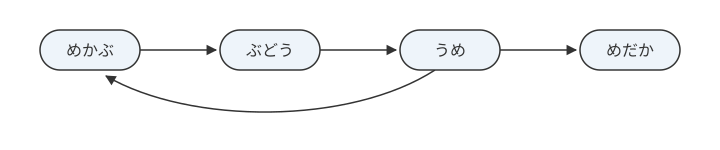
実際にハミルトン路を求めてみると、
「めかぶ」→「ぶどう」→「うめ」→「めだか」
となり、しりとりが完成することがわかります。
実は、このしりとり問題をハミルトン路問題に帰着させるのは、牛刀をもって鶏を割くようなもので、ハミルトン路問題の表現力を無駄遣いしています。難しい問題を解く強力な手法を、簡単な問題に使うのはもったいないのです。一般のハミルトン路を探索するアルゴリズムを使わずに解ける問題を、わざわざそのように定式化してしまっているということです。
すべての単語を用いたしりとり問題は（一方通行の道から構成される）オイラー路問題で表現できます。頂点ではなく辺が単語を表すように、単語ではなく文字を頂点にします。つまり、単語「めかぶ」を、先頭の文字「め」から末尾の文字「ぶ」へ向かう矢印（辺）に置き換えるのです。また、しりとりでは両端に位置する文字以外はしりとりに関係ないので省きます。帰着方法の詳細は書きませんが、以下の図をみてイメージをつかんでください。
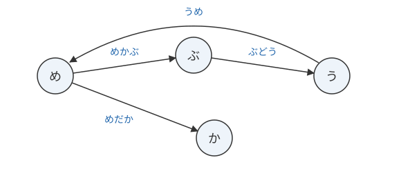
このグラフ上でオイラー路をみつければ、それがすべての単語を用いたしりとりになっていることがわかると思います。このように、元の文字列を再構成するためにオイラー路問題を解くためのグラフのことを、このグラフを考案したオランダの数学者にちなんで、de Bruijn グラフ（ド・ブルイングラフ）と呼びます。
|
【実際のゲノムアセンブリとの対応】 しりとりの例は、話を単純にするために「重なりは1文字、頂点も1文字」としました。実際のゲノムアセンブリで使われる de Bruijn グラフでは、読み取った断片（リード）をさらに一定の長さ \(k\) の部分文字列（\(k\)-mer）にすべて切り出し、各 \(k\)-mer の先頭 \(k-1\) 文字と末尾 \(k-1\) 文字を頂点、\(k\)-mer そのものを辺とするグラフを作ります。つまり重なりは \(k-1\) 文字で、しりとりの例は \(k=2\) に相当する最も単純な場合です。 また、実際のデータには読み取りの誤りが含まれ、ゲノムには同じ配列の繰り返しもあるため、オイラー路を1本見つけて終わり、というほど単純ではありません。グラフから誤りに由来する部分を取り除いたり、複数ありうる経路から妥当なものを選んだりする、多くの工夫が加わっています。 |
この単純化したモデルでは、一般のハミルトン路探索を使うより、オイラー路として解くほうが効率的です。ただし、実際のゲノムアセンブリには読み取り誤りや反復配列などがあり、すべてが一筆書きだけで解決するわけではありません。
実際のゲノムアセンブリの作業では非常に巨大な de Bruijn グラフができます。このグラフをメモリ上で小さく表現したまま（簡潔de Bruijnグラフ）経路をたどるアルゴリズムが開発されています。新型コロナウイルス（SARS-CoV-2）のゲノムも、簡潔de Bruijnグラフを用いる解析ソフト（MEGAHIT）で最初の全ゲノム配列が組み立てられました。そして、解読されたゲノム配列こそが mRNAワクチンを設計する出発点になったのです。現在のワクチン開発や創薬の背後には、さまざまなアルゴリズムの貢献があります。
|
理論と実践の結びつき この例は、純粋に理論的に見える数学的概念（グラフ理論、計算量理論）が、実際の生命科学研究や医療技術開発に直接貢献していることを示しています。COVID-19パンデミック下でのワクチン開発の速さも、こうした基礎理論の蓄積があったからこそ可能でした。 |
|
DNAでハミルトン路を解く 1994年、レナード・エイドルマンは、本物のDNA分子を使って、7つの頂点をもつ有向グラフのハミルトン路問題を解いてみせました。各頂点と各辺を短いDNAの断片（塩基配列）に符号化し、試験管の中で混ぜ合わせると、断片どうしが自然につながって膨大な数の「経路」が一気にできあがります。あとは分子生物学の手法（PCRや磁気ビーズによる選別）で、出発点から始まり全頂点をちょうど1度ずつ通る経路だけを残していきます。実験全体には1週間ほどかかりました。電子回路の代わりに生体分子の並列性で組合せ問題を解いた最初の例で、「DNAコンピューティング」という分野はここから始まりました。ちなみにエイドルマンは、後で出てくるRSA暗号の「A」(Adleman)その人でもあります。 |
1.4. 多項式時間で計算できる問題のクラス: P問題
理化学研究所と富士通が共同開発したスーパーコンピューター富岳は2020年から2年間、計算速度の世界ランキングで1位となりました（現在は1位ではなくなってしまいましたが…）。性能の指標については細かい話もあるのですが、ここでは「富岳は1秒間に約44京回の計算ができる」を目安にしましょう。44京は \(4.4\times 10^{17}\) ですから、富岳の約230倍速い仮想的な計算速度、つまり1秒間に \(10^{20}\) 回計算ができるコンピューターを想定して、計算時間の比較をしてみましょう。
|
富岳の計算能力について \(10^{20}\) という数は1の後に0が20個つく数、つまり1垓（がい）です。この想像を絶する計算速度を持つコンピューターでも、指数時間のアルゴリズムには太刀打ちできないということを、以下の表で確認してみましょう。 |
| 入力サイズ | \(n\) | \(n\log_2 n\) | \(n^2\) | \(2^n\) | \(n!\) |
|---|---|---|---|---|---|
\(10\) |
\(10^{-19}\)秒 |
\(3.3\times 10^{-19}\)秒 |
\(10^{-18}\)秒 |
\(1.0\times 10^{-17}\)秒 |
\(3.6\times 10^{-14}\)秒 |
\(20\) |
\(2\times 10^{-19}\)秒 |
\(8.6\times 10^{-19}\)秒 |
\(4.0\times 10^{-18}\)秒 |
\(1.0\times 10^{-14}\)秒 |
\(0.024\)秒 |
\(30\) |
\(3\times 10^{-19}\)秒 |
\(1.5\times 10^{-18}\)秒 |
\(9.0\times 10^{-18}\)秒 |
\(1.1\times 10^{-11}\)秒 |
\(8\)万\(4\)千年 |
\(40\) |
\(4\times 10^{-19}\)秒 |
\(2.1\times 10^{-18}\)秒 |
\(1.6\times 10^{-17}\)秒 |
\(1.1\times 10^{-8}\)秒 |
\(2.6\times 10^{20}\) 年 |
\(50\) |
\(5\times 10^{-19}\)秒 |
\(2.8\times 10^{-18}\)秒 |
\(2.5\times 10^{-17}\)秒 |
\(1.1\times 10^{-5}\)秒 |
- |
\(100\) |
\(10^{-18}\)秒 |
\(6.6\times 10^{-18}\)秒 |
\(10^{-16}\)秒 |
\(400\)年 |
- |
\(1000\) |
\(10^{-17}\)秒 |
\(1.0\times 10^{-16}\)秒 |
\(10^{-14}\)秒 |
\(3.4\times 10^{273}\)年 |
- |
\(10000\) |
\(10^{-16}\)秒 |
\(1.3\times 10^{-15}\)秒 |
\(10^{-12}\)秒 |
- |
- |
\(100000\) |
\(10^{-15}\)秒 |
\(1.7\times 10^{-14}\)秒 |
\(10^{-10}\)秒 |
- |
- |
|
指数時間の恐ろしさ この表から爆発的な時間計算量の増加がわかると思います。
どんなにコンピューターが高速化しても、指数時間のアルゴリズムは現実的ではありません。 |
\(n^2\) と \(2^n\) や \(n!\) との間には、入力サイズの変化に対する計算時間の増加について、はっきりとした違いがあります。\(2^n\) のような指数的な増加は、わずかな入力サイズの増加が、爆発的な計算時間の増加につながり、計算量を改善することが非常に困難であることが想像できると思います。スーパーコンピューターやハードウェアの目覚ましい発展ですら焼け石に水と感じるほど、指数的な計算時間の増加は爆発的なのです。
そこで、\(\text O(n)\) や \(\text O(n^2)\) のように、上界が多項式でおさえられる時間計算量を、多項式時間と呼び、比較的、太刀打ちしやすい時間計算量であると考えます。多項式とは、一般的に、\(a_k n^k + a_{k-1} n^{k-1} + \cdots + a_2 n^2 + a_1 n + a_0\) の形をした式のことですが、ビッグオー表記では、次数が最大の項のみを考慮します。また、\(\text O(n \log n)\) の場合、厳密には多項式ではありませんが、多項式時間で抑えられる時間計算量ということで、多項式時間とみなします。
|
多項式の形 多項式とは \(a_k n^k + a_{k-1} n^{k-1} + \cdots + a_2 n^2 + a_1 n + a_0\) の形の式です。具体例
どんなに次数が高くても、指数関数 \(2^n\) や階乗 \(n!\) と比べれば「穏やか」な増加です。 |
Yes/Noで答える決定問題のうち、最悪時間計算量が入力の長さの多項式でおさえられるアルゴリズムをもつ問題すべての集まり（このような集まりをクラスといいます）をP問題とよびます（多項式時間のことを英語で Polynomial Time というため）。
整列やオイラー路の構成は、多項式時間で解ける探索・出力の問題です。Pは厳密には決定問題のクラスなので、例えば「オイラー路は存在するか」という形にしてPへの所属を述べます。一方で、ハミルトン路を見つける問題が、P問題に含まれるかどうかは未解決問題です。つまり、多項式時間を超えるような時間計算量の下界が知られていないのです（すでに見たように現在の時間計算量の上界は指数時間でした）。
|
未解決問題の意味 「ハミルトン路問題がP問題に含まれるかどうかは未解決」というのは、以下のような状況です。
つまり、多項式時間のアルゴリズムが見つかる可能性も、「多項式時間では解けない」と証明される可能性も、どちらもまだ残っているということです。 |
なお、多項式時間といっても \(\text O(n^{100})\) のような場合は、とても現実的な計算量とは言い難く、あくまでも多項式時間は理論上の1つの目安であることも念を押しておきます。
1.5. 検証が多項式時間でできる問題のクラス: NP問題
すでにみてきた整列問題や、ハミルトン路・オイラー路を見つける問題は、いずれも解の候補が示されれば、それが本当に解になっているのかどうか検証することが簡単にできます。 整列問題では、与えられた並びの値を、隣り合う値が非減少順であることに加え、入力と同じ要素が同じ個数ずつ含まれていることも確認します。ハミルトン路問題では、解として示された経路をたどりながら、各頂点がちょうど1度ずつ現れ、連続する頂点の間に辺があることを確認します。オイラー路については、示された経路が、すべての辺を重複せずに含んでいることを確認します。いずれも、入力サイズに対して、多項式時間で検証できることは想像できると思います。
|
「解くこと」と「検証すること」の違い 日常的な例で考えてみます。
「解くのは難しいかもしれないが、少なくとも検証は簡単」という性質を持つ問題がNP問題です。 |
NPは、Yesである各入力に対して、入力の長さの多項式以内の長さの証拠があり、それを多項式時間で検証できる決定問題のクラスです。Noである入力では、どんな証拠を渡しても検証器が受理しないことが必要です。証拠を効率よく見つけられるとは限りません。 （厳密には、解候補を2進法で表記したときに、入力サイズに対して多項式サイズで表すことができるという条件も必要ですが、ここでは詳細には立ち入りません。）
NP問題のNPは、Nondeterministic Polynomial Time が由来です。検証が容易というのは、厳密に非決定性チューリングマシンという計算モデル上で多項式時間で解ける問題として定式化されますが、これについてもこの授業では立ち入りません（非決定的=nondeterministic）。
|
NPの正式な定義 NPは「Nondeterministic Polynomial Time」の略です。
実際のコンピューターは「決定的」で、すべての選択肢を順次試す必要があります。しかし「正しい答え」が与えられれば、それが正解かどうかは多項式時間で検証できます。これがNP問題の直感的な理解です。 |
|
本来のP問題やNP問題は、前章で定義した決定問題（Yes/Noで答えられる問題）の範囲で定義されます。たとえば、ハミルトン路の場合は、「与えられたグラフに対してハミルトン路が存在するか？」を問う問題になります。存在すれば Yes、存在しなければ No を出力します。しかし、この授業で扱ったようにハミルトン路を見つける問題（探索問題）であっても、計算量については大きな違いはありません。 |
2. P≠NP予想
NP問題のクラスは、解候補さえ与えられれば検証は容易なので、解候補を全列挙してから検証するタイプのアルゴリズムがすぐに作れてしまいます。しかし、実際には解候補の個数は膨大なことがほとんどであり、計算量も大きくなってしまいます。ハミルトン路の場合も、解候補は全頂点の順列を与えれば良いことがすぐに分かります。これは頂点数 \(n\) に対してちょうど \(n!\) 個ありますから、ナイーブなアルゴリズムの計算量も \(\text O(n!)\) になってしまいます。
整列問題でも並びの順列を全列挙して、一つ一つ単調増加していることをチェックするアルゴリズムを設計することができます。すでにご存知のように、整列問題では、そんな効率の悪いことをしなくても多項式時間のアルゴリズムが見つかっています。しかし、このような多項式時間の上界が見つかっていないようなNP問題については、依然として虱潰しに解候補を列挙するアルゴリズムよりも劇的に効率を上げることができずにいます。
|
なぜ総当たりしかできないのか？ NP問題の多くで、現在知られている最良のアルゴリズムが「総当たり（しらみつぶし）」に近い方法しかないのは、問題の構造が非常に複雑だからです。局所的な情報から全体の最適解を予測することが困難で、結果的に多くの可能性を調べざるを得ないのです。 |
P問題のクラスに属する問題集合を \(\text P\)、NP問題のクラスに属する問題集合を \(\text{NP}\) とおくことにします。すると、P問題ならばNP問題であることは明らかですから、\(\text P\subseteq\text{NP}\) です。なぜなら、解そのものを多項式時間で見つけられるなら、検証も多項式時間でできるのは当たり前だからです。問題は、\(\text P\subsetneq\text{NP}\) なのか（即ち、\(\text P\neq\text{NP}\) なのか）、\(\text P=\text{NP}\) なのかが、1970年代から今に至るまで多くの優れた研究者のチャレンジを寄せ付けず、未だに証明されていないのです。多くの研究者の見立てでは \(\text P\neq\text{NP}\) と予想されていて、右図のような包含関係があると考えられています。
|
P≠NP予想の重要性 この問題はクレイ数学研究所のミレニアム問題の1つで、解決者には100万ドルの賞金が出されています。なぜこれほど重要なのでしょうか？ もしP=NPが証明されたら
もしP≠NPが証明されたら
|
|
もしP=NPなら、創造性は要らなくなる？ 理論計算機科学者のスコット・アーロンソンは、もしP=NPが本当だったら、世界はわたしたちが思っているのとはまるで違う姿になるだろう、と述べています。解を自分で「思いつく」ことと、示された解を「確かめる」こととのあいだの隔たりが消えてしまうからです。アーロンソンは、交響曲の良さを味わえる人は誰もがモーツァルトになり、証明の筋道を追える人は誰もがガウスになり、優れた投資判断を見抜ける人は誰もがバフェットのような投資家になってしまう、と喩えています。「良し悪しを判定できること」と「自分で生み出せること」は別物だ、という私たちの日常の実感そのものが、P≠NPだろうという見立てを支えているのかもしれません。 |
|
【P≠NP問題を最初に問うたのは誰か — ゲーデルの手紙】 P≠NP予想が定式化されたのは1970年代初頭ですが、実は本質的に同じ問いが、それより15年も前に立てられていたことが後にわかりました。不完全性定理で知られる論理学者クルト・ゲーデルが、1956年3月にフォン・ノイマンへ宛てた手紙です。ゲーデルはそこで、「長さ \(n\) の証明をもつ論理式が与えられたとき、その証明を機械が見つけるのに必要なステップ数は \(n\) に比例、あるいは \(n^2\) に比例する程度まで減らせるだろうか」と問い、もしそれが可能なら「Yes/Noで答えられる問題に関する数学者の頭脳労働は、完全に機械で置き換えられることになる」と書いています。これは、現在の言葉でいえば「NPに属する問題が多項式時間で解けるか」という問いにほかなりません。 当時フォン・ノイマンはがんの闘病中で、返信をしたかどうかは知られていません。手紙自体も長く忘れられており、発見されて計算量理論の研究者に知られるようになったのは1980年代末のことでした。P≠NP予想の重要性を、分野が誕生する前に見抜いていた人物がいたわけです。 |
3. NP完全問題
NP問題の中で最も難しい問題の集まりを、NP完全問題といいます。また、NP完全問題に属する問題をNP完全であるといいます。正確には「NPに属し、かつNPのどの問題もそれに多項式時間還元できる問題」のことです（多項式時間還元についてはこの後で説明します）。よって、NP完全問題に属する問題が多項式時間で解けることがわかれば、NP問題はすべて多項式時間で解ける（つまり、\(\text{NP}=\text P\)）ことが言えることになります。一方で、おおかたの予想通り \(\text{NP}\neq\text P\) であるなら、ある問題がNP完全問題であることを示せれば、その問題がP問題でないことを示すことになります。
「最も難しい問題」と言いましたが、何をもって問題の「難しさ」に順序をつけるのでしょうか。ここで登場するのが前回触れた還元の考え方です。問題Bを問題Aに帰着（還元）して解けるならば、問題Bは問題Aと同等かそれより易しい問題であると考えられます。この還元は、目的に応じて2通りの使い方があります。
- (1) 対象の問題が易しいと示したいとき（既存のアルゴリズムを流用したいとき）
-
対象の問題Bを、すでに解き方のわかっている問題Aに還元します。問題Aのアルゴリズムを使って問題Bが解けるようになります。
- (2) 対象の問題が難しいと示したいとき
-
難しいとわかっている問題Bを、対象の問題Aに還元します。もし問題Aが易しく解けてしまうなら問題Bも易しく解けてしまうことになるので、問題Aは少なくとも問題Bと同じくらい難しいことになります。
ある問題がNP完全であることを示すときには、(2)の使い方をします。つまり、問題AがNP完全であることを示すには、すでにNP完全であるとわかっている問題Bのすべての入力を効率よく(多項式時間で)問題Aへの入力に変換して、問題Bを問題Aに帰着させて解けることを示します。
そのために、問題を別の問題に帰着させる変換である多項式時間還元（多項式時間帰着ともいいます）について説明します。
3.1. 多項式時間還元
ある問題が別の問題と「どれくらい似ているか」「どちらが難しいか」を調べるための強力な道具が「多項式時間還元」です。
難しそうな用語に聞こえるかもしれませんが、考え方は「翻訳」に似ています。たとえば、日本語しか読めないけれど、英語で書かれた重要な文章を理解したいとします。そのときは、おそらく翻訳ツールを使って、英語の文章を日本語に「翻訳」するでしょう。翻訳さえできれば、日本語を読む能力を使って、元の英語の文章の意味を理解できます。
多項式時間還元もこれと同じ発想です。難しさを比べたい問題Aと問題Bがあるとき、問題Bの入力を問題Aの入力へと「翻訳(還元)」します。もしこの翻訳が高速(多項式時間)にできるなら、次のことが言えます。
-
問題Aを解く方法があれば、それを使って問題Bも解ける
-
つまり、問題Aは少なくとも問題Bと同じか、それ以上に難しい
この「難しさの比較」が還元の要点です。
問題Bをある問題Aに帰着させるというのは、つまりは、問題Bに与える入力を、問題Aの入力に変換して、問題Aを解くということです。しかし、変換にどれだけ時間をかけてもいいのであれば、そこで、本質的な計算をしてしまっていることになりますので、問題の変換時間にも多項式時間という制約を与えます。また、問題A,Bともに決定問題の場合は出力がYes/Noで与えられますので、出力側の変換は不要で、そのまま問題Aの出力が問題Bの出力として使えます。
|
なぜ変換時間に制約が必要か？ もし変換に無制限の時間をかけてよいなら、変換の過程で問題Bを直接解いてしまうことができます。そうなると「問題Aに還元した」とは言えません。 例：「ハミルトン路問題」を「簡単な問題」に還元する際、変換で指数時間かけてハミルトン路を見つけてしまったら、還元の意味がありません。 多項式時間という制約により、変換は「本質的な計算」ではなく、純粋な「形式変換」に限定されます。 |
以下の図は決定問題（答えがYes/Noで答えられる問題）における多項式時間還元のイメージです。還元に必要なのは入力の変換だけであり、具体的に問題A,Bを解くアルゴリズムを示す必要はないことに注意してください。問題Bを問題Aに多項式時間還元可能であるとき、\(B\preceq_P A\) と表記します。\(P\) は多項式時間のPであり、\(\preceq\) は問題の難易度に関する順序関係を示しています。
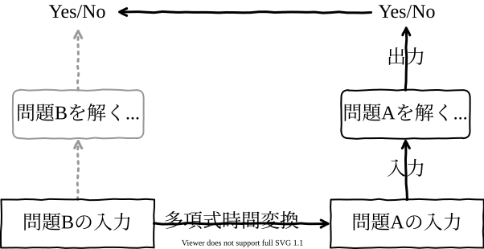
還元の「向き」と難しさの関係をパイプラインの形でまとめると、次の図のようになります。
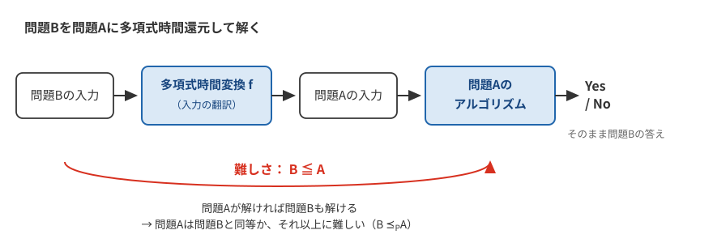
3.2. 多項式時間還元の例
たとえば、4人の客 a,b,c,d がいて、「aとb」,「aとc」,「cとd」,「bとd」がそれぞれ知り合いの関係にあるとき、知人関係は左下の表のように表現できます（知人関係にある欄に「✔」が記入されています）。このとき、右下の図のように円卓に座れば隣には知人しかいないことがわかります。
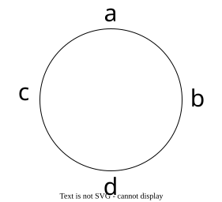
| a | b | c | d | |
|---|---|---|---|---|
a |
✔ |
✔ |
||
b |
✔ |
✔ |
||
c |
✔ |
✔ |
||
d |
✔ |
✔ |
さて、下のグラフについてハミルトン閉路の存在の有無を判定する問題を、円卓の席配置の存在の有無を判定する問題に変換してみましょう。
このグラフを知人関係を表す表に変換してみます。
| a | b | c | d | e | f | |
|---|---|---|---|---|---|---|
a |
✔ |
✔ |
||||
b |
✔ |
✔ |
✔ |
✔ |
||
c |
✔ |
✔ |
✔ |
✔ |
||
d |
✔ |
✔ |
✔ |
|||
e |
✔ |
✔ |
✔ |
✔ |
||
f |
✔ |
✔ |
✔ |
辺でつながっている部分は、表では知人関係にあるとして「✔」を入れています。たとえば、頂点 a と b は辺で繋がっているので、表の a と b が行と列で交わる部分に「✔」を記入します。 このとき、知人だけが隣に来るような円卓の席の配置は複数あるかもしれませんが、少なくとも下の図が1つの解になっているのは、容易に確認できると思います。
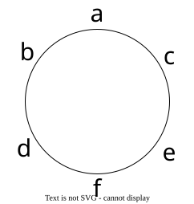
このように円卓の席配置が存在するとき、かつそのときに限り、ハミルトン閉路も存在し、以下のようになります。
この入力の変換が多項式時間でできるかどうかは、きちんと細かい議論が必要なのですが、直感的には直接的な変換ですし、多項式時間であるのはほぼ自明であるとしてこの授業では説明を割愛します。
|
この例の重要な点は、以下の同値性です。
この同値性により、どちらか一方の問題を解ければ、もう一方も解けることになります。そして変換（グラフ→知人関係表）が多項式時間でできるため、円卓問題がハミルトン閉路問題と「同じくらい難しい」ということが分かります。 |
以上の議論から、計算量の観点からはハミルトン閉路があるかどうかを判定する問題Bは、円卓の席配置があるかどうかを判定する問題Aよりも、簡単かまたは同等の難しさをもった問題であることがわかります。
そして、円卓問題は検算が容易であり、多項式時間でチェックできることはあきらかです。よって、円卓問題はNPに属する問題であることがわかります。
実はハミルトン閉路問題はNP完全であることが知られています。この事実をもちいると、これまでの議論から円卓問題もNP完全問題であるという論理的帰結に至ります。
3.3. NP完全性の証明手順
上の例で示したことをまとめてみましょう。
解の検証(検算)が多項式時間でできることがわかっている問題Aがあるとします。つまり、問題AはNPに属する問題です。このとき、問題AがNP完全であることを証明するには次の2段階の手順を示せば良いことがわかります。
-
既知のNP完全である問題Bを選ぶ
-
問題Bの入力を問題Aへの入力に多項式時間還元できることを示す
つまり、問題BはすでにNP問題のなかで最も難しい問題であるとわかっているので、同じくNPに属する問題Aも、多項式時間還元により問題Bと同じかそれ以上に難しい問題であることが判明すると、問題AはNP完全であることが結論づけられます。 (問題Aは解の検証が多項式時間でできるため、NPに属する問題であることに注意をしてください。) もし問題Aが多項式時間で解けるなら、還元により問題Bも、ひいてはすべてのNP問題が多項式時間で解けてしまいます。だからこそ問題Aは「NP問題の中で最も難しい問題の1つ」なのです。
|
数独がNP完全問題であることは、最初の授業ですこし触れたとおりです。ぷよぷよの連鎖問題もNP完全であることが知られています。問題サイズは盤面の大きさであり、決定問題としての問いは「\(k\) 連鎖可能であるか」です。テトリスの列消去問題についても同様の問題設定で、NP完全であることが示されています。 |
ここで当然の疑問がわきます。多項式時間還元を用いてある問題がNP完全であることを示すには、最初の出発点となるNP完全問題が必要になります。それは、いったいどうやって得られたのでしょうか。歴史的には、はじめてNP完全であることが示された問題は、ブール代数の充足可能性問題（SAT問題）です。出発点となるこの1問だけは、還元元にできる既知のNP完全問題がありませんから、「NPに属するあらゆる問題から直接還元できる」ことを力ずくで示す必要がありました。その証明は後で扱うことにして、まずSAT問題そのものについて説明します。
この問題は出力がYes/Noの問題ですが、実際に変数への値の割当てを見つける問題と変更しても計算量の議論はそれほど変わりません。実際にYesとなる証拠である変数の割当てが示されると、検証は変数に示された値を代入して計算するだけですので、多項式時間で計算可能です。
|
和積形とは？ 和積形（連言標準形、CNF: Conjunctive Normal Form）とは、以下の形の論理式です。 \((x_1 + x_2 + \bar{x}_3) \cdot (\bar{x}_1 + x_4) \cdot (x_2 + \bar{x}_4 + x_5)\)
和積形は、「いくつかのOR句をANDでつないだ形」です。 |
SAT問題の例をみてみます。
真理値表を書くのが確実ですが、変数が5つありますので面倒です。 この論理式の値を1にする変数の割当ては複数ありますが \(x=v=1\), \(w=0\) であれば、残りの変数の値はなんであってもよさそうです。よって、たとえば \(f(1,0,1,1,1)=1\) となります。よって、答えは Yes です。
|
解の確認方法 \(x=v=1, w=0, y=z=1\) を代入してみます。
すべての項が1なので、全体も \(1 \cdot 1 \cdot 1 = 1\) となります。 |
別の論理式についても考えてみます。
この論理式については、\(g(x,y,z)=1\) となるような変数 \(x,y,z\) への値の割当ては存在しないため、答えは No です。今回は変数が3つなので真理値表を書いてもそれほど手間ではありませんが、変数が \(n\) 個の場合、真理値表の行数は \(2^n\) になりますので、真理値表を使えば指数時間かかります。
|
なぜ答えがNoなのか？ \(g(x,y,z)\) を満たす割当てが存在しないことを示してみましょう。
どちらの場合も矛盾が生じるため、解は存在しません。 |
3.4. 最初のNP完全問題：SATはどうやって証明された？
ここで、「そもそも、なぜSAT問題がNP完全の『最初の石』になれたのか？」という疑問が湧くかもしれません。他のNP完全問題はSATからの還元で証明されるのに、SAT自身はどうしたのでしょうか。
これは1970年代初頭にクックとレヴィンが独立に証明した、計算量理論における画期的な成果です。その証明の概要はやや難解ですが、かいつまんで説明すると以下のようになります。
-
計算の万能モデル「チューリングマシン」: まず、あらゆるコンピューターの計算は、前章で扱ったチューリングマシン（無限に長いテープと、テープの記号を読み書きするヘッドからなる仮想機械）の動作としてモデル化できる、という大前提があります。
-
NP問題と「勘のいい」マシン: NP問題は「『非決定性』チューリングマシンで多項式時間で解ける問題」として定義されます。この「非決定性」とは、いわば「勘が鋭く、常に正しい選択肢を選べる」能力です。あらゆる可能性を同時に試せる、とイメージしてもよいでしょう。
-
クックとレヴィンの大発見: 彼らは、「どんな非決定性チューリングマシンの動作（つまり、どんなNP問題の計算過程）でも、それを表現するSATの論理式に変換（エンコード）できる」ことを示しました。
-
具体的には、マシンの「テープの各マスの状態」「ヘッドの位置」「計算のステップ」などをすべて論理変数で表現します。
-
そして、「マシンが正しくルール通りに動作している」という条件全体を、これらの変数を使った一つの巨大な論理式として組み立てたのです。
-
-
証明の完了: この組み立てが元の入力サイズの多項式時間ででき、できあがる論理式も多項式サイズにおさまります。その結果、「元のNP問題の答えがYesである」ことと「組み立てた論理式が充足可能である」ことが同値になります。つまり、どんなNP問題もSAT問題に多項式時間還元できるわけです。SAT自身は割当てを代入するだけで検証が多項式時間ででき、NPに属していますから、SATは「NPに属し、かつNPのどの問題もそれに還元できる問題」、すなわちNP完全の第1号となったのです。
クック（1971年）とレヴィン（1973年発表）の独立な結果は、還元の連鎖の出発点になりました。クックの発表の翌年、1972年にはカープが、SATを含む21の問題の間で還元を示して、それらがNP完全であることを一気に示します。その中には、ハミルトン閉路に関する問題も含まれていました。この授業でオイラー路と対比してきたハミルトン路の問題は、NP完全だったのです。還元を積み重ねてNP完全性を芋づる式に広げていく話は、次回くわしく扱います。
|
【冷戦をまたいだ同時発見 — クックとレヴィン】 興味深いのは、SAT問題のNP完全性の証明に、同時期に2人の人物がまったく独立にたどり着いていたということです。当時トロント大学の准教授であったスティーブン・クックと、もうひとりは、モスクワ大学で確率論の大家であるコルモゴロフの元で指導をうけていた大学院生のレオニード・レヴィンです。当時の世界は東西陣営で軍拡競争が激しく行われている冷戦下でしたから、東西陣営間での自由な研究者の人的交流もほとんどなく、互いにほぼ独立した状況で同様の発見に到達していたのです。レヴィンの業績が西側諸国でも徐々に認識されるようになったのは、彼が1978年に米国へ移住し、MITで博士号を取得した1970年代末以降のことです。余談ですが、前々回の授業に登場したクイックソートの考案者ホーアが1959年に留学し、機械翻訳の研究をしていた先も、同じモスクワ大学のコルモゴロフの研究室でした。 現在、SAT問題がNP完全問題であるという事実はクック-レヴィンの定理として知られています。 |
NPに属するすべての問題を多項式時間還元できる問題のクラスを、NP困難(NP-hard)といいます。つまり、NP困難に属する問題は、NP完全に属する問題と同等か、それ以上に難しい問題であると言えます。
|
NP完全とNP困難の違い
正確な関係性
|
これらのクラスの包含関係を、P≠NPの場合とP=NPの場合とで対比して描くと、以下のようになります。
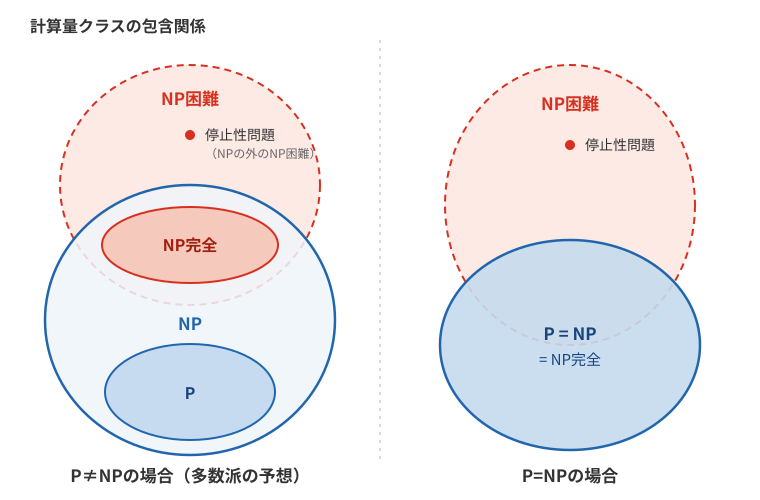
4. NPとco-NP
4.1. YesとNoの非対称性
NP問題の定義をあらためて見直してみましょう。NP問題とは「答えがYesであることの証拠(解候補)が与えられれば、それが正しいことを多項式時間で検証できる問題」のクラスでした。ハミルトン閉路問題であれば、閉路を1つ見せてもらい、それをたどって確認するだけで「たしかに存在する(Yes)」と納得できます。
この定義は、YesとNoを対称には扱っていないことに注意してください。答えがNoのとき、つまり「グラフにハミルトン閉路が存在しない」ことを、相手に短時間で納得させる証拠にはどのようなものがあるでしょうか。頂点の順列をすべて確かめてもらう方法では、証拠の検証だけで指数時間かかってしまいます。ハミルトン閉路が存在しないすべての入力に対して使える、多項式長の証拠と多項式時間の検証方法は知られていません。個別には、グラフが非連結など、簡単に非存在を示せる場合があります。
4.2. Noの証拠が検証できる問題のクラス: co-NP問題
そこで、NPの定義のYesとNoを入れ替えたクラスを考えます。「答えがNoであることの証拠が与えられれば、それを多項式時間で検証できる問題」のクラスをco-NP問題といいます。ある問題のYesとNoを入れ替えた問題を補問題とよぶと、co-NPとは「補問題がNPに属する問題」の集まりだと言うこともできます。
co-NPの代表例は、SAT問題の補問題である「与えられた論理式は充足可能でないか」を判定する問題(UNSAT)です。この問題の答えがNoであること、すなわち式が充足可能であることは、式の値を1にする割当てを1つ示せば多項式時間で検証できます。「与えられた論理式は恒真式か(どのような値の割当てでも値が1になるか)」を判定する問題(TAUTOLOGY)も同様です。恒真式でないことは、式の値を0にする割当てを1つ示せば検証できるので、この問題もco-NPに属します。ここでTAUTOLOGYの入力は任意の論理式とし、CNFだけには制限しません。UNSATやTAUTOLOGYは、SATがNPの中で最も難しい問題であるのと対をなして、co-NPの中で最も難しい問題(co-NP完全)であることが知られています。
4.3. PはNPとco-NPの両方に含まれる
Pに属する問題は、証拠に頼らなくても多項式時間で自力で答えを計算できます。この場合、Yesの証拠にもNoの証拠にも「計算の記録」をそのまま使うことができ、検証する側は同じ計算を多項式時間でなぞるだけで答えを確認できます。したがって、Pに属する問題はNPにもco-NPにも属し、
が成り立ちます。\(\text{NP}\cap\text{co-NP}\) は、YesとNoのどちら側にも短い証拠がある問題のクラスです。
このクラスは「Pに属しそうな問題の候補地」とみなされることがあります。象徴的な例が素数判定問題(与えられた自然数は素数か)です。素数でないことの証拠は約数を1つ示せばよく、素数であることにも短い証拠があることが1975年に示されていたため、素数判定は \(\text{NP}\cap\text{co-NP}\) に属することが知られていました。これは「Pに属するのではないか」という兆候と受け止められ、実際、2002年にAKSアルゴリズムという多項式時間アルゴリズムが発見されて、素数判定はPに属することが証明されました。一方、次の節で登場する素因数分解に対応する判定問題も \(\text{NP}\cap\text{co-NP}\) に属することが知られていますが、こちらがPに属するかどうかは未解決のままです。
4.4. NP=co-NPか?
P=NPか?と同じように、NP=co-NPか?も未解決問題です。ここでもNP完全問題が鍵を握ります。もしNP完全問題が1つでもco-NPに属することが示されれば、NPのすべての問題はその問題に多項式時間還元できるため、NP全体がco-NPに含まれることになり、さらに対称性からNP=co-NPが導かれます。多くの研究者はNP≠co-NPと予想していますから、裏を返すと「NP完全問題はco-NPには属さない」、つまり「SATには、充足不能であることの短い証拠は存在しない」と予想されていることになります。
NP≠co-NPと予想される場合のクラスの包含関係を図にすると、次のようになります。前節の図の左側(P≠NPの場合)に、co-NPを描き加えた形になっています。
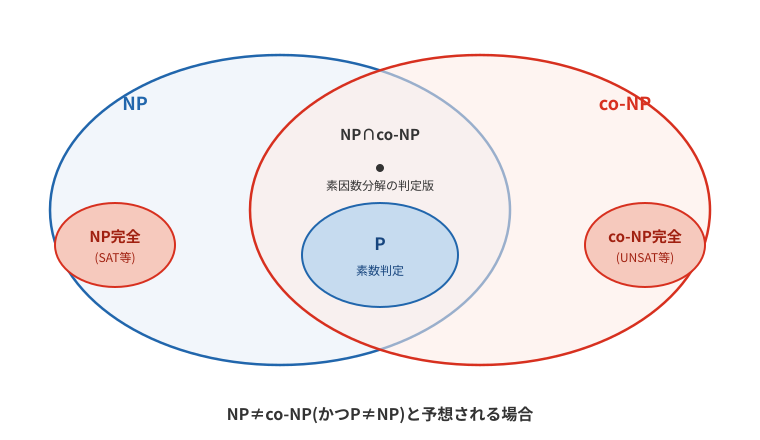
4.5. P≠NP予想との関係
NP≠co-NPが証明されると、P≠NPも直ちに従います。対偶で考えてみましょう。もしP=NPなら、NPに属するどの問題も多項式時間で解けることになります。そして、Pに属する問題はYesとNoを入れ替えてもPに属したままです(自力で答えを計算してから反転すればよいだけです)。したがって、P=NPならばNP=co-NPも成り立ちます。この対偶をとると「NP≠co-NPならばP≠NP」が得られます。つまり、NP≠co-NPはP≠NPよりも強い主張です。逆に、P≠NPからNP≠co-NPが従うかどうかはわかっていません。P≠NPでありながらNP=co-NPであるという可能性も、論理的にはまだ排除されていないのです。
5. 計算量と暗号
問題が効率的に解けるというのは、いいことばかりかというと、現在の暗号にとってはそうでもありません。現代の暗号の多くは解読の計算困難性を利用して設計されています。この場合、最悪計算量よりも平均または最良計算量が重要です。例としてナップサック暗号の話をしましょう。
|
暗号と計算量の密接な関係 現代社会のセキュリティは「計算の困難さ」に依存しています。
この非対称性により、暗号化された情報を安全に送ることができます。もしP=NPが証明されれば、この前提が崩れる可能性があります。 |
いま定義した「総額を最大にする組合せを求める」形のナップサック問題は、NP困難であることが証明されています（「総額を \(V\) 以上にできるか」というYes/No形式に直したものがNP完全です）。かつて、この難しさを頼りに、ナップサック問題を利用した暗号（ナップサック暗号）が設計されました。代表例のMerkle–Hellman暗号は、解きやすい超増加列を秘密鍵とし、変換によってその構造を隠す設計でした。超増加列が解きやすいこと自体は最初から分かっていたのです。しかし、基本方式では隠した構造を利用する多項式時間の攻撃をShamirが示しました。一般のナップサック問題が難しくても、この暗号の安全性は保証されません。
|
最悪計算量と暗号の安全性 計算量理論では「最悪の場合」を考えますが、暗号では「実際に使う入力」が難しいことが重要です。
一般の問題の難しさに加え、鍵の生成方法が作る入力の分布や、隠した構造への攻撃も考えなければなりません。最悪計算量の難しさは、それだけでは暗号の安全性を保証してくれないのです。 |
暗号の分野で用いられている「素因数分解」や「グラフの同型性判定問題」は、NP完全問題であることは示されておらず、NP完全ではないだろうと考えられていますが、その正確な位置づけは未確定です（グラフの同型性判定については、2015年に準多項式時間アルゴリズムが発見されています。なお「準多項式時間」と、この後に出てくる「準指数時間」は、名前は似ていますが別の概念で、どちらも多項式時間と指数時間の間に位置する時間計算量です）。
公開鍵暗号の1つであるRSA暗号の安全性の拠り所となっているのは、「素因数分解」の計算困難性です。素因数分解は因数を求める探索問題なので、決定問題のクラスNPにそのまま分類することはできません。対応する決定版「整数 N は2以上 k 以下の約数をもつか」なら、約数を証拠として多項式時間で確かめられるのでNPに属します。Nを素因数分解できればRSAの秘密鍵を求められますが、RSAの解読と素因数分解が同じ難しさだと証明されているわけではありません。しかし、素因数分解の多項式時間アルゴリズムは知られていません。一般数体ふるい法は、標準的なヒューリスティック解析では準指数時間と評価されます。ただし、これは任意の入力に対して証明された最悪時間の上界とは区別する必要があります。しかし、計算モデルが変わると計算量も変わってしまいます。量子コンピューターを用いると「素因数分解」は多項式時間で解けてしまうことが1994年にShorによって示されています。分解したい数のビット数（桁数）を \(b\) とすると \(\text O(b^3)\) 程度の計算量で、素因数分解の入力サイズはビット数ですから、これは多項式時間です。ただし、量子コンピューターをもちいてもNPに属する問題をすべて多項式時間で解くことは、どうやら不可能だろうと予想されています（量子コンピューターを用いてもNP完全の壁は依然としてありそうだという予想です）。
|
量子コンピューターの脅威と限界 量子コンピューターにより脅かされる可能性がある問題
量子コンピューターでもできないと予想されること
このため、「量子耐性暗号」の研究が進んでいます。量子計算機による既知の攻撃にも耐えることを目指す暗号方式です。古典計算で一方向と考えられる関数が、すべて量子計算にも強いわけではありません。 |
6. むすび
次回はいよいよ最後の講義です。今回は多項式時間還元を、抽象的な説明のあとで直接的な変換の例によって見ました。次回は、もう少し歯ごたえのある還元の例を扱う予定です。
|
今回の授業で学んだこと
これらの概念は、コンピューター科学の理論的基盤として、また実際の技術開発における指針として、大切な役割を果たしています。 |
| 指数関数のO上界しか示されていない場合、それだけでは多項式時間ではないと結論できません。上界には、実際の増え方より大きな関数も使えるからです。 |
8. 練習問題の解答
まず自分で解いてから読むことをすすめます。
多項式時間に分類されるのは(1)と(4)です。
(1)については対数の底を \(c (c>1)\) と置くと下記のように変形できますので多項式です。
底が2でも自然対数でも、定数でありさえすれば \(n\) の定数乗になり、結論は変わりません。(4)の \(\text O(n^{5000})\) も、指数が巨大なだけで \(n\) の定数乗なので多項式です。一方、(2)と(3)で上界に使っている関数は多項式では抑えられません。ただし、示されたものはO上界なので、対象の計算量そのものが多項式時間でないとまでは結論できません。
(2)と(4)です。本文で示したとおりです。
以上です